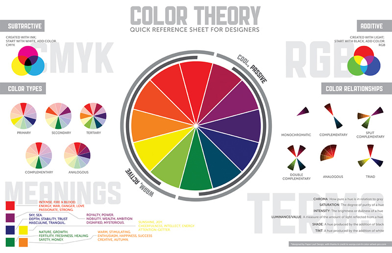

Welcome to Ladies Learning Code's
Introduction to
Photoshop & Illustrator
( Interactive code slides thanks to CoderDeck.
( Interactive code slides thanks to CoderDeck.
Brand is the "name, term, design, symbol, or any other feature that identifies one seller's product distinct from those of other sellers."
Brand is not just a logo or a tagline, but the entire emotional story of you or your product. We tell this story through our designs.
This means that your brand should let potential client identify key things about you.
Apple - what we know from apple's brand
Ikea
American Apparel
Choose three things that you'd like to communicate through your marketing materials.
This is a REALLY difficult thing to do, and commonly takes a designer weeks or even months of work to complete.
How the heck do I communicate these ideas in a design?
When designing, we choose design elements that can work together to communicate our brand.
Would this design work for Apple?

The goal of good design is to successfully communicate an idea to an intended audience.
What do we notice about this ad?

What do we notice about this ad?

The 3 things we'll be discussing:
Understanding design theory is valuable because it gives us a shorthand to determine where our designs are working and where they are not.
These are the components we use when creating our design.
These are what we do with the elements of our design; how we arrange them.

Colors communicate emotions and can strongly influence an audience's perception of a brand.
Colors communicate emotions and can strongly influence an audience's perception of a brand.
Now that we understand a little design theory...


Photoshop is a very complex and powerful program that is used primarily to manipulate raster images.
For our purposes today, we'll be using it for screen graphics.
RGB colour
Low-res, 72 dpi
Raster Images
Measured in Pixels

A raster graphic is an image made of hundreds (or thousands or millions) of tiny squares of color information, referred to as either pixels or dots. (Technically pixels refer to color blocks viewed on an electronic monitor where as dots refer to the ink dots on a printed piece. But even professional designers, myself indluced, often use these two terms interchangeably.) - from youthedesigner.com
A vector graphic uses math to draw shapes using points, lines and curves. So whereas a raster image of a 1” x 1” square at 300 dpi will have 300 individuals pieces of information, a vector image will only contain four points, one for each corner; the computer will uses math to “connect the dots” and fill in all of the missing information. - from youthedesigner.com
The important things for us to remember today are:
Logos and fonts are best made as vectors (using Illustrator), since it allows us to resize them with losing quality.
Web graphics, especially photographs, are best made as raster images (using Photoshop), since we have more control over how they will be rendered online.)

Some things we'll do:
Choose fonts
Choose colour palette
Add background
Insert logo
Use clipping masks and layer styles
losttype.com

fontsquirrel.com


Let's choose a color and a texture for our background!
Take ten minutess
"Your first try will be wrong. Budget and design for it." - Aza Raskin